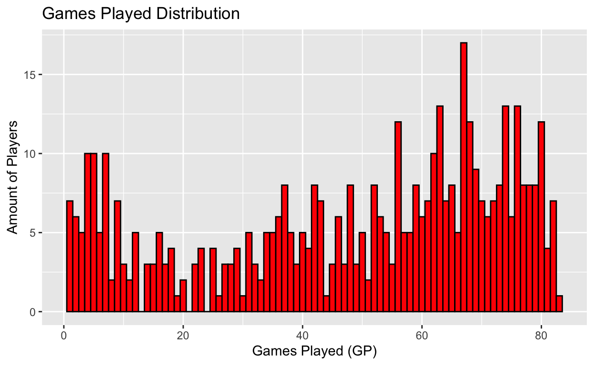

My final project
The National Basketball Association (NBA) is one of the most polarizing professional sports leagues in the world. Competing with the likes of professional football, professional baseball, and international soccer, the NBA is one of the most viewed sports among Americans. In recent years, the NBA has seen an increase in “load-management” - the idea that in order to succeed, the best players on the best teams need to rest periodically throughout the regular season to be fit to win a championship in the post-season. Unsurprisingly, the NBA has received negative feedback regarding load-management. The main argument against the idea is that fans pay their hard earned money to come watch the best, most celebrated players play.
Load management has sparked intense conversations in the world of sports with “experts” saying that it seems like the best players actually play the least. This leads me to my research question, do higher paid NBA players play less games per year than players paid less than them? I, like the so called experts, agree that it does appear that the highest paid players actually play the least. Therefore, I hypothesize that players who are paid the most tend to play less games per year than a player paid less. In my findings, I will help find the real truth behind the load-management dispute.
The data source being evaluated is the NBA 2022-2023 salaries dataset: nba_salaries. This data source contains statistics on all 466 players from the 2022-2023 season. These statistics contain salary, games played, minutes played, field goal average, and field goal percentage just to name a few. In order to answer my research question I will only be looking at salary and games played.
In this case, the dependent variable is games played as it is the outcome that I am trying to understand and predict. On the other hand, the independent variable is salary as it is the factor that I believe may have an effect on the amount of games played, or the dependent variable. Both the dependent and independent variable are measured through statistical observation. Simply put, salary is measured by how much a player made in 2022-2023 and games played is measured by how many games a player is recorded playing in during the 2022-2023 season. The plot below represents the dependent variable.
This research design is cross-sectional. A cross-sectional study is an observational research design that is used to compare outcomes treated and control units at one point in time. This dataset is an observational study involving the collection of data from all NBA players in the 2022-2023 season.
library(tidyverse)
library(ggplot2)
nba_dependent_variable <-
ggplot(data = nba_salaries, aes(x = GP, y = )) +
geom_histogram(binwidth = 1, fill = "red", color = "black") +
labs(title = "Games Played Distribution", x = "Games Played (GP)", y = "Amount of Players")
nba_dependent_variable
Below, the relationship between salary and games played can be seen. With high density surrounding both low pay and fewer games played, it can be determined that, as of the “Games Played vs. Salary” plot, those who are paid more do in fact play more than their counterparts. However, to find out the true proportion of games played and salary we must look at regression.
The main coefficient of interest being evaluated in this regression is salary. The goal in mind is to find a correlation between games played and salary. Below it can be seen that every dollar paid is equal to 0 games. However, the true number is not 0. Technically, one dollar paid is equal to 7.916e-07 games played. As a result, the p-value for “Dollars Per Game” is less than 0.001 making it statistically significant. Furthermore, with the data being statistically significant it can reasonably be determined that the null hypothesis is rejected. This coefficient does represent a causal effect. The amount of money being paid has a direct effect on a player’s participation. With a positive regression, it can be proven that the results are driven by cause.
Following the evaluation of regression, there is table that shows the amount of games played for players ranked 1-100 based on pay and players ranked 101-350 based on pay. In order to simplify the results from the regression table, columns “Top_100_Games_Played_Avg” and “Top_101to350_Games_Played_Avg” show the average amount of games played in the 2022-2023 NBA season per different pay group. As seen, players paid in the top 100 played almost 7 more games than those ranked based on pay 101-350.
library(tidyverse)
library(broom)
fit <- lm(nba_salaries$GP ~ nba_salaries$Salary)
var_labels <- c(
"(Intercept)" = "Intercept",
"nba_salaries$Salary" = "Dollars Per Game")
modelsummary::modelsummary(list(fit),
coef_map = var_labels,
gof_map = c("nobs", "r.squared", "adj.r.squared"))| (1) | |
|---|---|
| Intercept | 41.570 |
| (1.374) | |
| Dollars Per Game | 0.000 |
| (0.000) | |
| Num.Obs. | 467 |
| R2 | 0.117 |
| R2 Adj. | 0.115 |
gamesplayed_100 <- read_csv("nba_salaries.csv") |>
slice_max(GP, n = 100) |>
summarize(Top_100_Games_Played_Avg = mean(GP))
gamesplayed_101to350 <- read_csv("nba_salaries.csv") |>
slice_max(GP, n = 101-350) |>
summarize(Top_101to350_Games_Played_Avg = mean(GP))
SalaryandGP_comparison_tibble <- tibble(gamesplayed_100,
gamesplayed_101to350)
SalaryandGP_comparison_tibble# A tibble: 1 × 2
Top_100_Games_Played_Avg Top_101to350_Games_Played_Avg
<dbl> <dbl>
1 76.5 69.8knitr::kable(SalaryandGP_comparison_tibble)| Top_100_Games_Played_Avg | Top_101to350_Games_Played_Avg |
|---|---|
| 76.50495 | 69.83636 |
As stated above, every dollar paid is equal to 7.916e-07 games played. This number, 0.0000007916, appears insignificant in this context. However, in the NBA, payment isn’t done by the single dollar or even the hundreds of dollars, payment is done by the millions. When using proper scale, it can be determined that for every million dollars paid, a player plays 0.7916 games. Nearly one whole game, it is without a doubt that this finding is statistically significant. As a result, it can be determined that those who are paid more will ultimately play more. In the above table it can be seen that players paid more than the league average played 7 more games in the 2022-2023 NBA season than their counterparts. This finding disproves my hypothesis of: players who are paid the most tend to play less games per year than a player paid less. Unfortunately, year after year the NBA sees a portion of it’s players miss out on games due to injury. In the case of my research, injuries can be seen as threats to inference. Players only playing a handful of games due to injury ultimately weighs the data down. With injuries, the average amount of games played per player is brought down. Addressing the problem of injuries would be the first thing on my list to fix. Removing injured players would give us a more accurate data set; however, it would also be unnatural as injuries are a part of the game. Another way to continue to improve this analysis would be a more in depth look at salary. I measured the difference in games played between the top two pay groups. To find further discrepancies, it would be worth taking a deeper look at another salary group - those paid the least. With rookies and free agents often receiving minimum pay, it would be interesting to see their games played production compared to their salary.